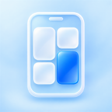

할 일
끝나는 날
Teacher Desk 2 Mobile
카카오톡 안에서 열렸습니다 — 구글 로그인이 막힐 수 있어요
불러오는 중

PC TeacherDesk2의 할 일·일정·시간표·메모를 폰에서 보고 적습니다. PC와 같은 구글 계정으로 로그인하세요. 자료는 선생님 구글 드라이브의 앱 전용 숨김 칸에만 있습니다.
허락 화면에 ‘구글 드라이브’ 칸이 있으면 켠 뒤 허용해 주세요
상담기록은 PC 화면에서만 보던 자료입니다. 폰을 다른 사람에게 보여 줄 때 주의하세요.